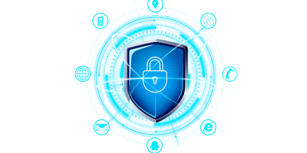

防范网络诈骗，从你我做起
-
谨慎对待网络信息
对于陌生人发来的涉及金钱、个人隐私等重要信息，务必仔细核实来源和真实性。
比如收到中奖通知或退款链接时，不要轻易点击，应通过官方渠道查证。
可以直接拨打官方客服电话或手动输入官方网址查询，绝不能使用信息中提供的链接或联系方式。
此外，对于一些不明来历的邮件、短信等也要保持警惕，避免随意回复或点击其中的链接。
-
强化账号安全管理
设置强密码，并开启多因素身份验证，如短信验证码、指纹识别等。
避免在公共网络环境登录重要账号，若必须登录，可使用虚拟专用网络（VPN）加密连接。
例如，在公共场所连接免费 Wi-Fi 时，要格外小心，防止账号信息被窃取。同时，定期修改重要账号的密码，增加账号的安全性。
 -
提高网络素养
学习网络安全知识，了解常见的网络诈骗手段和防范方法，增强自我保护意识。
关注网络安全新闻和相关的官方通报，及时掌握最新的诈骗趋势和防范要点。
积极参加网络安全培训或讲座，提升自己在网络世界中的辨别能力和应对能力。
-
定期检查设备安全
安装正版的杀毒软件和防火墙，并且定期更新病毒库和系统补丁，确保设备能及时抵御最新的网络威胁。
定期扫描设备，检查是否存在恶意软件或可疑程序，若发现异常情况及时处理，防止个人信息泄露和被不法分子利用。